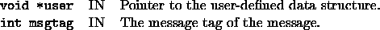

int user_process_own_messages(void *user, int msgtag)
The user must receive any message he sends to the master process (independently of SYMPHONY's own messages). An example for such a message is sending feasible solutions from separate heuristics processes fired up in user_start_heurs().


%